Wind Power and Its Metrologies
I. Apparatus
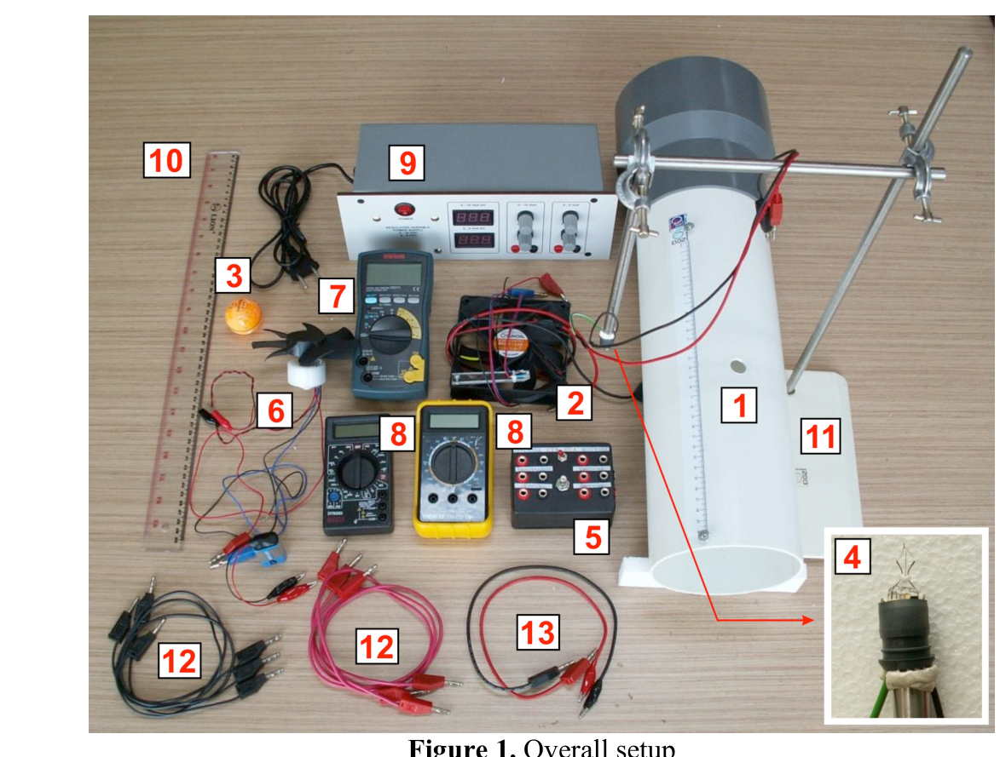
Figure 1. Overall setup.- Wind tunnel with nichrom (nickel-chromium) wire
- Computer fan: with frequency sensor
- Ping pong ball
- Hotwire filament: Please be careful not to touch the filament
- Electronic box for hotwire
- Turbine: with frequency sensor
- Digital MultiMeter (DMM) #1: for frequency measurement
- DMM #2 and #3
- Power Supply: with adjustable output 15 V max and 9 V max
- Ruler (50 cm)
- Static stand
- Cables with banana jacks on both ends (3 pairs)
- Cable with banana jack and crocodile jack on each end (1 pair)
Constants & Data
| Quantity | Symbol | Value |
|---|---|---|
| Gravitational acceleration | ||
| Mass density of air | ||
| Ping pong ball diameter |
Error analysis is not required.
II. Introduction
Wind power is a rapidly expanding source of renewable and clean energy and is becoming more important to power our growing population. The wind power can be converted to useful electrical power using a wind turbine as shown in Figure 2.
We will explore the physics of wind power and wind turbine and their related metrologies. We will investigate two methods of measuring wind speed, i.e. ping pong ball anemometer and hot wire anemometer. Finally we will also explore the physics of the wind turbine and its power conversion efficiency. We will use a wind tunnel with a suction fan on one end that provides a laminar (not turbulent) wind flow.1
This experiment is divided into five sections:
- A. Theoretical background
- B. The wind tunnel
- C. Ping pong ball anemometer
- D. Hot wire anemometer:
- (1) Constant Temperature Method
- (2) Constant Current Method
- E. Wind turbine
Figure 2. An array of wind turbines in a wind farm.
III. Experiment & Questions
[A] Theoretical Background [1.0 pt]
We will explore basic theoretical aspects of wind power and power conversion efficiency of a wind turbine.
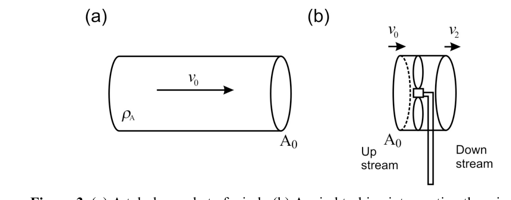
Figure 3. (a) A tubular packet of wind. (b) A wind turbine intercepting the wind flow.[A.1] Consider a packet of air with mass density flowing through a tube with a cross section area as shown in Figure 3(a). Show that the power contained in the wind is:
P_W = \frac{1}{2}\,\rho_A\,A_0\,v_0^{\,n} \tag{1}
What is the value of ? We will also determine experimentally in part B.2. [0.4 pt]
[A.2] Now consider a wind turbine with a rotor area , intercepting a tubular section of the wind of the same cross section area as shown in Figure 3(b). The velocity at the rotor can be assumed to be . The maximum power that can be extracted by the wind turbine can be written as:
P_R = \frac{1}{4}\,\rho_A\,A_0\,(v_0 + v_2)\,(v_0^2 - v_2^2) \tag{2}
The downstream wind slows down by a factor , where . For the turbine to extract maximum power, cannot be too low (as the wind flow will stop) or too high (which means the turbine captures very little power from the wind). Find the optimum value of that will yield the maximum power for the wind turbine. [0.4 pt]
[A.3] We define rotor efficiency (or power coefficient) as the power that can be extracted by the rotor of the wind turbine over the available wind power :
C_P = \frac{P_R}{P_W} \tag{3}
Based on your answer in question A.2, find the maximum value of . This value is called Betz efficiency2 which sets the theoretical limit of maximum power conversion efficiency of a wind turbine. [0.2 pt]
[B] The Wind Tunnel [3.2 pt]
We will use a wind tunnel with a computer fan to serve as wind generator by blowing the wind out of the wind tunnel (a suction type wind tunnel) to achieve a more laminar flow of wind.
Measuring the rotation speed of the motor or wind turbine is important in wind power engineering. We will use a simple optoelectronic-sensor circuit as shown below to measure the rotation frequency of the motor. The opto-sensor consists of a pair of infrared light emitter and detector that will detect a reflective strip on the blade as the motor rotates (Figure 4).
Instruction & Warnings:
- A. Connect the opto-sensor circuit as shown in Figure 4.
- B. WARNING: Please be careful with the crocodile jacks on the battery for the opto-sensor, they are quite fragile.
- C. WARNING: If you don’t need to read the motor frequency please disconnect the battery to avoid draining its power.
- D. WARNING: If you need to read the voltage from the power supply, you can use a DMM (digital multimeter) to get more significant figures.
- E. WARNING: If you are using the DMM as an ampere-meter beware of the range limit. If you blow the DMM fuse only one replacement is provided.
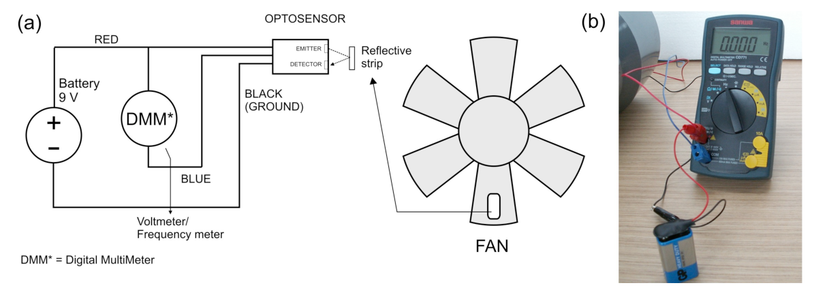
Figure 4. Opto-sensor output connection to the DMM #1 that works as voltmeter or frequency meter.[B.1] With no power to the motor, switch DMM #1 to voltmeter mode (labeled V on the DMM) and rotate the fan manually and slowly and you will see the voltage is changing. Roughly plot the opto-sensor’s signal as a function of blade rotation (or time). Indicate the period of the signal. [0.8 pt]
The wind speed inside the tunnel is mainly determined by the rotation frequency () of the wind generator motor. The relationship between the wind speed (measured at the center of the tunnel) and the motor frequency has been measured as shown in Figure 5 below and follows a simple linear relationship:
v = 0.0873\ \text{meter} \times f_M \tag{4}
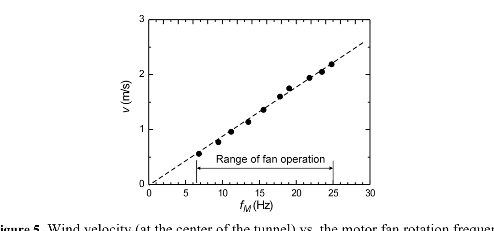
Figure 5. Wind velocity (at the center of the tunnel) vs. the motor fan rotation frequency.[B.2] The motor fan has fairly fixed mechanical efficiency (ratio of the wind power generated over the input electrical power to the motor fan ) for the rated voltage: . This mechanical efficiency is given by . Perform an experiment to determine the mechanical efficiency and the power factor for the wind power in Eq. 1. Sketch your connection diagram. [2.4 pt]
[C] Ping Pong Ball Anemometer [3.5 pt]
Measuring wind speed is a primary metrology activity in wind power engineering. We will investigate a very simple method to measure wind speed using a ping pong ball pendulum as shown in Figure 6.
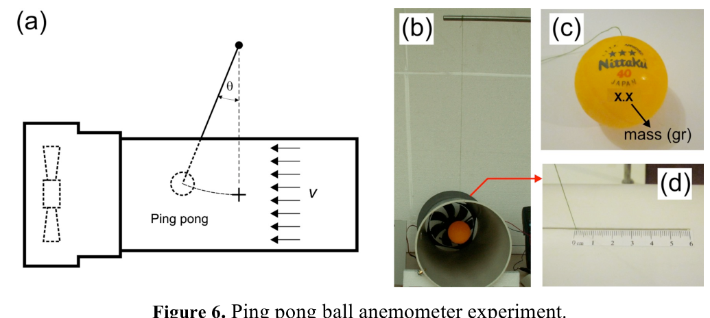
Figure 6. Ping pong ball anemometer experiment.The principle of operation is very simple, the wind will impose a drag force and deflect the ping pong pendulum by an angle . This drag force is given by:
F_D = \frac{1}{2}\,C_D\,\rho_A\,A_B\,v^{\,m} \tag{5}
where is the drag coefficient of the object, is the density of the fluid (air), is the cross section of the ping pong ball, is the velocity of the ball relative to the fluid and is the power factor. Mass of the ping pong ball (in gram) is written on the ball as shown in Figure 6(c). Please refer to Constants & Data on pg. 2 for other data.
Instructions & Warning:
- A. Insert the pendulum thread into the slot with the imprinted ruler as shown in Figure 6(d). Position the ping pong ball at the center of the tunnel. The imprinted ruler helps you to calculate the deflection angle .
- B. WARNING: The joint between the thread and the ping pong ball is fragile. Please be gentle.
- C. WARNING: Please make sure that the ping pong pendulum moves freely.
- D. WARNING: If you do not need to read the motor frequency, please disconnect the 9 V battery to avoid draining its power.
[C.1] Relate the wind speed as a function of the deflection angle . Draw the force diagram. Express your answer in terms of, among others, the mass density of the air () and the ping pong ball mass (). [0.7 pts]
[C.2] Perform an experiment to determine and . [2.8 pts]
[D] Hot Wire Anemometer [6.7 pt]
The ping pong ball anemometer we studied just now is not really suitable for practical applications that usually require electrical read-out. Thus, we will investigate another method of measuring wind speed: hot-wire anemometer (HWA). HWA utilizes a filament that becomes hot as electrical current is passed through it. As the wind blows, it introduces forced convection that takes away heat from the filament so the temperature (and thus the resistance) of the filament will drop as shown in Figure 7 (unless compensated by increasing the electrical power). This phenomenon can be exploited to measure the wind speed. In this experiment we will study the characteristics of the hot wire with respect to varying wind velocity.
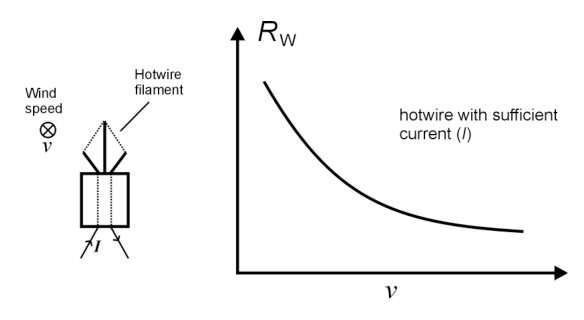
Figure 7. Hot wire anemometer with wind blowing into the plane.We use a metal (tungsten) filament from an ordinary light bulb where the bulb is intentionally broken to expose the filament. For a small change of temperature, the filament resistance follows a linear relationship:
R_w = R_0\,[1 + \alpha\,(T_w - T_0)] \tag{6}
where is the filament’s resistance at temperature , is the resistance at temperature and is the temperature coefficient of the resistance. For tungsten, the value is .
Now, we will consider the heat transfer between the filament and its surrounding, which can happen through natural convection (without external source of wind/fluid movement), forced convection (with external source of disturbance), conduction (mainly to the filament’s holder and base) and radiation.
Consider the case where the filament is heated by external power such as by electric current, and is transferring the heat to its surrounding by all the processes above. After the system has reached equilibrium, the power balance can be expressed as:
V_W\,I_W = h'\,A_W\,(T_W - T_0) + Q_{nc} + Q_{\text{conduction}} + A_W\,\sigma\,\varepsilon\,(T_W^4 - T_0^4) \tag{7}
where is the surface area of the filament, the room/surrounding temperature (presumably the original temperature of the filament), the Stefan-Boltzmann constant, the emissivity and the forced convection heat transfer coefficient.
For the forced convection of the hot wire filament, the forced convection process can be expressed as King’s law: , where and are constants and is the power factor of the wind velocity. The filament’s length is much larger than its width hence the heat transfer by means of conduction can be ignored. For small temperature difference (), , so the radiation heat transfer can be written as and can be considered constant. After taking into account all these we can rewrite Eq. (6) as:
V_W\cdot I_W = (a + b\,v^{\,c})\,(T_W - T_0) \tag{8}
with .
Now we will perform experiments to determine the value of and with two different methods: hotwire with constant temperature and with constant current flowing through it.
Mount the hotwire filament to a steel rod as shown in Figure 8(a) and put it inside the wind tunnel through the hole (you can rotate the wind tunnel). When you insert the hotwire into the wind tunnel, make sure you have the correct orientation: the largest cross section of the hotwire filament is perpendicular to the wind flow, see Figure 8(b). WARNING: Please don’t touch the filament.
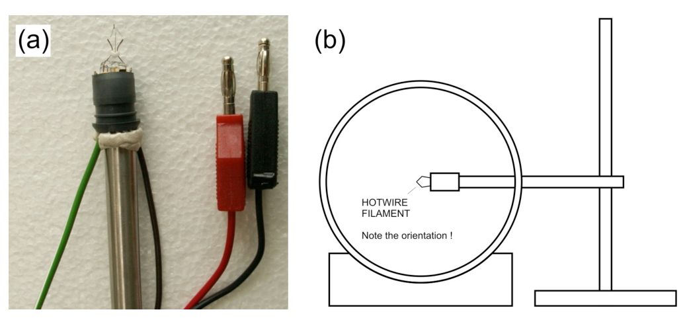
Figure 8. (a) Hotwire filament. (b) Hotwire filament in the wind tunnel.The two experiments require some electronic circuit to perform which we provide in an electronic box, see Figure 9 below. To perform each of the experiments, you will only need one side of the circuit. There is a small switch on the top of the box to toggle between the two, labeled as CTA (Constant Temperature Anemometer) and CCA (Constant Current Anemometer).
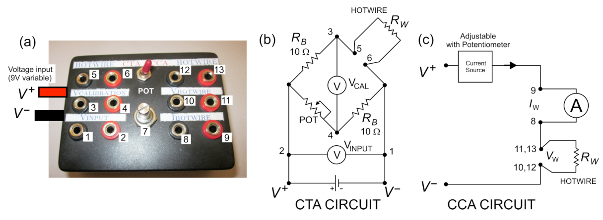
Figure 9. (a) Hotwire electronic box. (b) Constant Temperature Anemometer (CTA) circuit. (c) Constant Current Anemometer (CCA) circuit.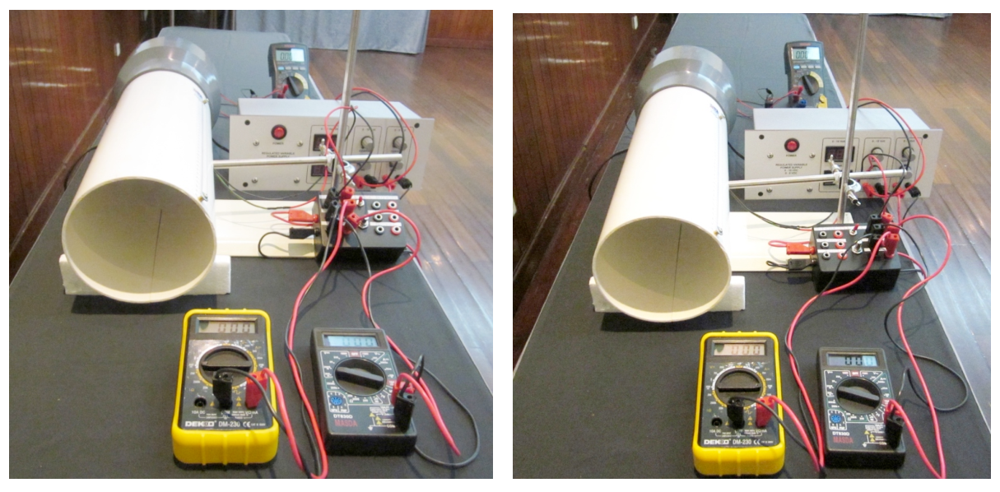
Figure 10. (a) Constant temperature anemometer (CTA) setup on the left. (b) Constant current anemometer (CCA) setup on the right.[D.1] Constant Temperature Method [3.2 pts]
The constant temperature method is performed by keeping the temperature of the hotwire (and thus its resistance) constant for different wind speeds. To achieve this we use a Wheatstone bridge with a variable (POT) resistor across the hotwire to balance the bridge as shown in Figure 9(b).
First we balance the bridge by tuning the potentiometer (POT) to set the to zero. When the wind speed increases, reduces and the bridge goes out of balance. To restore and rebalance the bridge we need to increase (by increasing ) to increase power dissipation.
The following formula is used in the constant temperature experiment:
\frac{V_W^2}{R_W} = (a + b\,v^{\,c})\,(T_w - T_0) \tag{9}
with and being the potential and resistance across the hotwire. We do not measure the hotwire potential, instead we measure the potential drop through the Wheatstone bridge (). With this substitution, Eq. 9 above can be rewritten as:
V_{INPUT}^2 = A + B\,v^{\,c} \tag{10}
[D.1.1] Find an expression for and . [0.4 pt]
Eq. 10 can be rewritten into a linear form that you can use in linear regression:
y = \ln\frac{b}{a} + c\,\ln v \tag{11}
[D.1.2] What is ? [0.3 pt]
[D.1.3] Perform the experiment and obtain and ! [2.5 pt]
Instructions & Warning:
- A. Switch the electronics box to constant temperature (CTA) mode.
- B. Connect the wires and jacks according to Figure 9(b) and Figure 10(a). Use the 9 V variable voltage source from the power supply for the hotwire electronic box.
- C. WARNING: Please be careful not to touch and damage the hotwire filament. If you damage the hotwire, you will be provided with only 1 replacement hotwire during the whole experiment.
- D. Carefully inspect that you have all the connections correct and make sure all the knobs on the power supply are turned all the way down (left) before you turn it on.
- E. Turn on the power supply and slowly increase the voltage to the electronic box to around 1 V. After this, you have to adjust the potentiometer on the Wheatstone bridge so that is zero. Before the wind is blowing, adjust the potentiometer so that is zero. We call the bridge in this condition balanced. (f) Once balanced you do not need to vary the resistance with the potentiometer for subsequent measurement. (g) WARNING: do not use voltage higher than 2 V when there is no wind, you may damage the hotwire. The hotwire is damaged if it glows. Remember: only 1 replacement hotwire is allowed for the whole experiment. (h) Increase wind speed, adjust so that the bridge is balanced again, i.e. the hotwire resistance has returned to the initial value. (i) Repeat step (h) until you have enough data. Record your data on the answer sheet and plot your graph to determine and . (j) WARNING: Do not turn down the power to the motor before you turn off the power to the hotwire. If you do, the hotwire will overheat and may be damaged. Remember: only 1 replacement hotwire is allowed for the whole experiment.
[D.2] Constant Current Method [3.5 pts]
The constant current experiment is done by keeping the current through the hotwire constant using the electronic box that serves as a constant current source. The current can be adjusted by tuning the potentiometer on the box.
The following formula is used for the constant current experiment:
\frac{V_W}{I_W} = \frac{R_0 + \alpha\,R_0\,(R_W - R_0)}{a + b\,v^{\,c}} \tag{12}
which is obtained from Eq. 8 with the following substitution:
In this experiment, we first need to measure , which is done when there is no wind (). Eq. (12) can be rewritten as:
\frac{R_W\,V_W}{I_W} = R_0 + k\,V_W \tag{13}
[D.2.1] Find an expression for . [0.2 pt]
[D.2.2] Perform an experiment to determine the value of . [1.2 pts]
Instruction & Warnings:
- A. Switch the electronics box to constant current (CCA) mode.
- B. Connect the wires and jacks according to Figure 9(c) and Figure 10(b). Carefully inspect that they are correct and make sure all the knobs on the power supply are turned all the way down (left) before you turn it on.
- C. WARNING: do not use current higher than 180 mA, you may damage the hotwire. The hotwire is damaged if it glows. Remember: only 1 hotwire replacement is allowed.
- D. Turn on the power supply and slowly increase the voltage or current to the hotwire.
- E. Notice that you can limit the current to the hotwire by adjusting the potentiometer on the box (i.e. the current and voltage across the hotwire will not increase even when you increase the voltage on the power supply). We suggest you set the voltage from the power supply to 7.5 V to have a stable working voltage for the electronics box. (f) Make sure the DMM to measure the current is working properly, i.e. the reading is not zero. The current measurement circuit on a DMM is protected by a fuse. If the fuse is broken, the DMM will still appear to be working but the current measurement will always be zero. (g) Record the current and voltage across the hotwire. (h) Repeat step (g) until you have enough data. Record your data on the answer sheet and plot your graph to determine and .
Now we are ready to determine and like in the constant temperature case. Rewrite Eq. 12 into the following form:
y = \ln\frac{b}{a} + c\,\ln v \tag{14}
[D.2.3] What is in this case? [0.2 pt]
[D.2.4] Perform an experiment to determine and . [1.9 pt]
Instructions & Warnings:
- A. Make sure all the knobs on the power supply are turned all the way down (left) before you turn it on. Turn on the power supply and slowly increase the voltage/current to the hotwire.
- B. Adjust the potentiometer to the working current that you desire. WARNING: do not use current higher than 180 mA, you may damage the hotwire. The hotwire is damaged if it glows. Remember: only 1 hotwire replacement is allowed.
- C. Turn up the motor wind generator voltage to generate wind.
- D. Record the current and voltage across the hotwire for this wind speed.
- E. Readjust the wind speed and repeat step (d) until you have enough data. (f) Record your data on the answer sheet and plot your graph to determine and .
[E] Wind Turbine [5.6 pt]
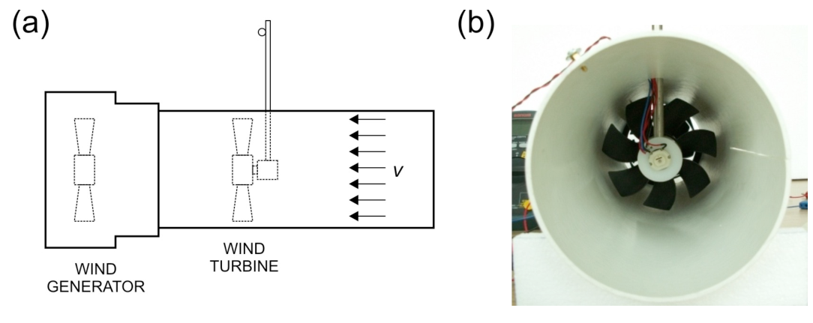
Figure 11. The wind turbine experiment setup.We will explore the physics of the wind turbine and investigate its power conversion efficiency. In this experiment we use a simple DC motor to serve as a wind turbine that converts the mechanical power from the rotor into electrical power.
One factor that determines the efficiency of a wind turbine is the external load. In this experiment, we will investigate the load that generates maximum efficiency for a wind turbine, by using a resistive nickel-chromium (nichrom) wire to simulate a low resistive load (< 2 ohm). This load can be changed by varying the length of the wire. Use the crocodile clips to contact the wire.
One key parameter that influences the wind turbine efficiency is the Tip Speed Ratio (TSR), which is defined as:
\text{TSR} = \frac{\Omega\,R}{v} \tag{15}
where is the angular speed of the blade, is the radius of the blade swept area and is the wind speed coming on the rotor at the tip of the blade. We assume the wind speed is uniform across the cross section of the tunnel.
The motor turbine has an equivalent internal circuit as shown below. A rotating coil provides electromotive force (emf) voltage when the motor rotates. There is an effective series resistance , which is the sum of the resistance of the rotor coil inside the motor. is small but not negligible (< 2 ). Thus the real motor can be modeled as an ideal motor (whose coil has no resistance) plus a series resistance as shown below.
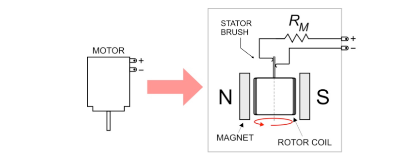
Figure 12. The equivalent circuit of the motor (wind turbine).[E.1] Determine the internal series resistance of the motor turbine . Note that the moving contact between the rotor and stator brush of the DC motor (see Figure 12) may add extra resistance that varies with the position of the turbine blade. [0.4 pt]
[E.2] Determine the resistance per unit length of the nichrom wire, (in ). Note that the range of resistance of the nichrom wire is low (< 7 ohm) comparable to the cable resistance of the digital multimeter (DMM). [1.2 pt]
If you need a constant current source you can use the hotwire electronic box in Constant Current Anemometer (CCA) mode. If you need to use an ampere-meter use DMM #2 or #3 and please be careful not to exceed the rating or to blow the fuse.
Instructions:
- A. Place the turbine inside the wind tunnel. First, route the banana and crocodile jacks of the turbine through the small hole on the top of the wind tunnel from inside the tunnel. Then insert the mounted steel rod (use the one for hotwire) into the hole and put the turbine at the end of it, see Figure 11.
- B. You will need to measure two frequencies in this experiment: the wind generator frequency (to obtain the wind speed) and the wind turbine frequency. You can do this by combining the connection as shown in Figure 13(a). You can use the black crocodile clip to switch between reading wind generator or wind turbine.
- C. Connect the nichrom wire as load to the motor turbine using crocodile clips. You can measure the voltage across the wire section separately by simply connecting the voltmeter at both ends of the nichrom wire as shown in Figure 13(b).
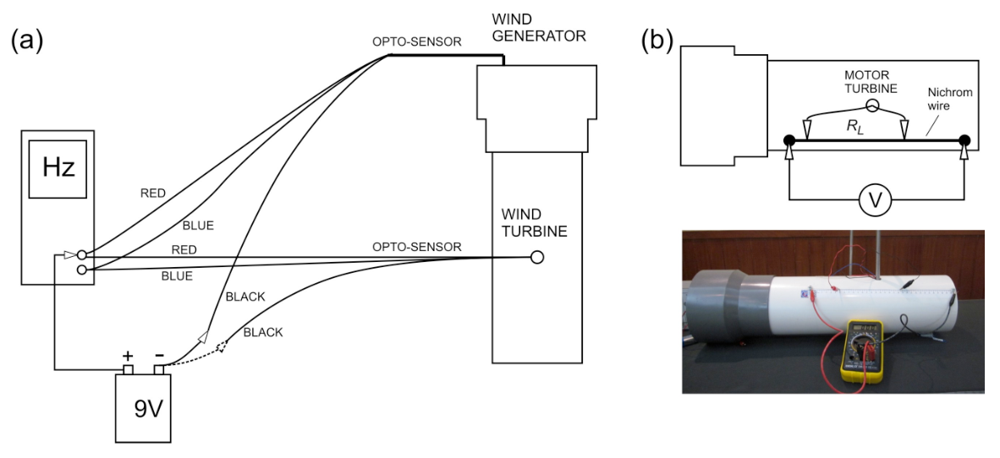
Figure 13. (a) Connection to read two frequencies. (b) Connection to the nichrom wire as a load. Note that the voltmeter is connected at both ends of the nichrom wire.[E.3] Perform an experiment to determine the optimum load for maximum power transfer. Plot the power delivered to vs. or nichrom length . What do you expect theoretically for ? [2.4 pt]
The wind turbine efficiency is defined as the ratio of power delivered to the load to the available wind power .
[E.4] Using the optimum load that you found experimentally in E.3, plot vs. TSR. [1.6 pt]
Fonte: Testo (PDF) — p.1 Topic: Fluid Mechanics, Circuits Metodi: Experimental Data Analysis, Graph Linearization, Conservation of Energy, Dimensional Analysis Competenze: Experimental Data Analysis, Measurement & Instrumentation, Graph Linearization, Curve Fitting Objects: Ball, Pendulum, Wire
Energia eolica e sue metriche
I. Apparecchi
Figura 1. Impostazione complessiva.
- Telle di vento con filo di nichromo (niccholo-cromo)
- Ventilatore per computer: con sensore di frequenza
- Pallone di ping pong
- Filamento di filo: Attenzione a non toccare il filamento
- Cassa elettronica per filo caldo
- Turbina: con sensore di frequenza
- Multimetro digitale (DMM) n. 1: per la misurazione delle frequenze
- DMM 2 e 3
- Fornace: con uscita regolabile 15 V massimo e 9 V massimo
- Ruler (50 cm)
- Stagno statico
- Cavi con coperte di banana alle due estremità (3 coppie)
- Cable con una copertura a banana e una copertura a coccodrillo ad ogni estremità (1 coppia)
Costanti e dati
Quantità # Simbolo # Valore
|---|---|---| | Gravitational acceleration | | | | Mass density of air | | | | Ping pong ball diameter | | |
Non è richiesta l’analisi degli errori.
II. Introduzione
L’energia eolica è una fonte di energia rinnovabile e pulita in rapida espansione e sta diventando sempre più importante per alimentare la nostra crescente popolazione. L’energia eolica può essere convertita in energia elettrica utile utilizzando una turbina eolica come mostrato alla figura 2.
Esploreremo la fisica dell’energia eolica e delle turbine e le loro relative metrologie. In questo caso, la velocità del vento è valutata in due modi: Anemometro a palle di ping pong e anemometro a filo caldo. Infine, esploreremo anche la fisica della turbina eolica e la sua efficienza di conversione di energia. Utilizzeremo un tunnel a vento con un ventilatore di aspirazione ad una estremità che fornisce un flusso di vento laminare (non turbolento). [1]
Questo esperimento è diviso in cinque sezioni:
- A. Sottopiede teorico
- B. Il tunnel del vento
- C. Anemometro a pallone di ping pong
- D. Anemometro a filo caldo:
- (1) Metodo di temperatura costante
- (2) Metodo di corrente costante
- E. Turbine eoliche
Figura 2. Un’arredamento di turbine eoliche in un parco eolico.
III. Esperimento e domande
[A] Sfondi teorici [1.0 ptt]
Esploreremo gli aspetti teorici di base dell’energia eolica e dell’efficienza di conversione di energia di una turbina eolica.
Figura 3. (a) Un pacchetto tubulare di vento. (b) A wind turbine intercepting the wind flow.
[A.1] Si consideri un pacchetto di aria con densità di massa che scorre attraverso un tubo con un’area di sezione trasversale come mostrato alla figura 3(a). Mostra che la potenza contenuta nel vento è:
P_W = \frac{1}{2}\,\rho_A\,A_0\,v_0^{\,n} \tag{1}
Qual è il valore di ? Determineremo anche sperimentalmente nella parte B.2. [0.4 pt]
[A.2] Ora consideriamo una turbina eolica con una superficie del rotore , che intercetta una sezione tubulare del vento della stessa area di sezione trasversale come mostrato nella figura 3(b). La velocità al rotore può essere presumita di . La potenza massima che può essere estratta dalla turbina eolica può essere scritta come:
P_R = \frac{1}{4}\,\rho_A\,A_0\,(v_0 + v_2)\,(v_0^2 - v_2^2) \tag{2}
Il vento a valle rallenta di un fattore , dove . Per ottenere la potenza massima della turbina, non può essere troppo bassa (perché il flusso di vento si fermerà) o troppo alta (il che significa che la turbina cattura molto poco potere dal vento). Trova il valore ottimale di che permetterà di ottenere la potenza massima per la turbina eolica. [0.4 pt]
[A.3] Definisce l’efficienza del rotore (o il coefficiente di potenza) come la potenza che può essere estratti dal rotore della turbina eolica rispetto alla potenza eolica disponibile :
C_P = \frac{P_R}{P_W} \tag{3}
Sulla base della risposta alla domanda A.2, trovare il valore massimo di . Questo valore è chiamato efficienza Betz2 che fissa il limite teorico dell’efficienza massima di conversione di potenza di una turbina eolica. [0.2 pt]
Il tunnel del vento
Useremo un tunnel a vento con ventilatore per computer per servire come generatore di vento soffiando il vento dal tunnel a vento (un tunnel a vento di aspirazione) per ottenere un flusso di vento più laminare.
La misurazione della velocità di rotazione del motore o della turbina eolica è importante nell’ingegneria dell’energia eolica. Utilizziamo un semplice circuito di sensori optoelettronici come mostrato di seguito per misurare la frequenza di rotazione del motore. Il sensore ottico è costituito da un paio di emettitori di luce a infrarossi e da un rilevatore che rilevano una striscia riflettente sulla lama mentre il motore ruota (Figura 4).
**Instruzioni e avvertimenti: **
- A. Connettere il circuito opto-sensore come mostrato alla figura 4.
- B. ** AVVERTORE: ** Si prega di essere attenti con i jack di coccodrillo sulla batteria per il sensore ottico, sono piuttosto fragili.
- C. ** AVVERTORE: ** Se non è necessario leggere la frequenza del motore, si prega di disconnettere la batteria per evitare di esaurire la sua potenza.
- D. ** AVVERTORE:** Se è necessario leggere la tensione dell’alimentazione, è possibile utilizzare un DMM (multimetro digitale) per ottenere cifre più significative.
- E. ** AVVERTORE: ** Se si utilizza il DMM come ampere-metro, si faccia attenzione al limite di autonomia. Se si fa saltare il fusibile DMM, viene fornito solo un sostituto.
Figura 4. Connessione di uscita del sensore ottico al DMM # 1 che funziona come voltmeter o frequenza.
[B.1] Senza energia al motore, passare il DMM #1 alla modalità voltmeter (etichettata V sul DMM) e girare il ventilatore manualmente e lentamente e vedrai che la tensione cambia. Il segnale dell’ottrosensore è descritto in modo diretto come funzione della rotazione della lama (o del tempo). Indicare il periodo del segnale. [0.8 pt]
La velocità del vento all’interno del tunnel è determinata principalmente dalla frequenza di rotazione () del motore del generatore di vento. La relazione tra la velocità del vento (misurata al centro del tunnel) e la frequenza del motore è stata misurata come mostrato nella figura 5 di seguito e segue una semplice relazione lineare:
v = 0.0873\ \text{meter} \times f_M \tag{4}
Figura 5. Velocità del vento (al centro del tunnel) vs. la frequenza di rotazione del ventilatore del motore.
[B.2] The motor fan has fairly fixed mechanical efficiency (ratio of the wind power generated over the input electrical power to the motor fan ) for the rated voltage: . Questa efficienza meccanica è data da . eseguire un esperimento per determinare l’efficienza meccanica e il fattore di potenza per la potenza eolica in Eq. 1. Segna il tuo diagramma di connessione. [2.4 pt]
[C] Anemometro a pallone di ping-pong [3.5 ptt]
La misurazione della velocità del vento è un’attività primaria di metrologia nell’ingegneria dell’energia eolica. Esamineremo un metodo molto semplice per misurare la velocità del vento utilizzando un pendolo a palla di ping pong come mostrato nella Figura 6.
Figura 6. Ping pong ball anemometer experiment.
Il principio di funzionamento è molto semplice, il vento impone una forza di trazione e devia il pendolo del ping pong da un angolo . Questa forza di trazione è data da:
F_D = \frac{1}{2}\,C_D\,\rho_A\,A_B\,v^{\,m} \tag{5}
se è il coefficiente di resistenza dell’oggetto, è la densità del fluido (aria), è la sezione trasversale della palla di ping pong, è la velocità della palla rispetto al fluido e è il fattore di potenza. La massa della palla di ping pong (in grammi) è scritta sulla palla come mostrato alla figura 6(c). Si prega di consultare Constants & Data su pag. 2 per altri dati.
**Instruzioni e avvertimenti: **
- A. Inserire il filo del pendolo nella fessura con la regola stampata come mostrato alla figura 6(d). Posiziona la palla di ping pong al centro del tunnel. Il regolare stampato aiuta a calcolare l’angolo di deviazione .
- B. ** AVVERTORE: ** La giunta tra il filo e la palla di ping pong è fragile. Per favore, sii gentile.
- C. ** AVVERTORE: ** Assicuratevi che il pendolo del ping pong si muova liberamente.
- D. ** AVVERTORE: ** Se non è necessario leggere la frequenza del motore, si prega di disconnettere la batteria da 9 V per evitare di esaurire la sua potenza.
[C.1] Relazionare la velocità del vento come funzione dell’angolo di deflessione . Disegna il diagramma della forza. Esprimere la risposta in termini, tra gli altri, della densità di massa dell’aria () e della massa della palla di ping pong (). [0,7 pts]
[C.2] Eseguire un esperimento per determinare e . [2,8 pts]
[D] Anemometro a filo caldo [6,7 ptt]
L’anemometro di palline di ping-pong che abbiamo appena studiato non è proprio adatto per applicazioni pratiche che di solito richiedono una lettura elettrica. Quindi, esamineremo un altro metodo per misurare la velocità del vento: l’anemometro a filo caldo (HWA). L’HWA utilizza un filamento che diventa caldo quando la corrente elettrica passa attraverso di esso. Quando il vento soffia, essa introduce una convezione forzata che toglie il calore dal filamento in modo che la temperatura (e quindi la resistenza) del filamento scenda come mostrato nella figura 7 (a meno che non venga compensata aumentando la potenza elettrica). Questo fenomeno può essere sfruttato per misurare la velocità del vento. In questo esperimento studieremo le caratteristiche del filo caldo rispetto alla varia velocità del vento.
Figura 7. Anemometro a filo caldo con vento che soffia nell’aereo.
Utilizziamo un filamento di metallo (tungsten) da una lampadina ordinaria dove la lampadina viene intenzionalmente rotta per esporre il filamento. Per un piccolo cambiamento di temperatura, la resistenza del filamento segue una relazione lineare:
R_w = R_0\,[1 + \alpha\,(T_w - T_0)] \tag{6}
se è la resistenza del filamento a temperatura , è la resistenza a temperatura e è il coefficiente di temperatura della resistenza. Per il tungsteno, il valore è .
Ora, consideriamo il trasferimento di calore tra il filamento e il suo ambiente circostante, che può avvenire attraverso la convezione naturale (senza fonte esterna di movimento del vento/fluido), la convezione forzata (con fonte esterna di disturbo), la conduttività (principalmente al tenore e alla base del filamento) e la radiazione.
Si consideri il caso in cui il filamento è riscaldato da una potenza esterna, come la corrente elettrica, e trasmette il calore al suo ambiente mediante tutti i processi di cui sopra. Dopo che il sistema è stato raggiunto l’equilibrio, l’equilibrio di potenza può essere espresso come:
V_W\,I_W = h'\,A_W\,(T_W - T_0) + Q_{nc} + Q_{\text{conduction}} + A_W\,\sigma\,\varepsilon\,(T_W^4 - T_0^4) \tag{7}
se è la superficie del filamento, la temperatura ambiente/circondante (presumibilmente la temperatura originale del filamento), la costante Stefan-Boltzmann, l’emissività e il coefficiente di trasferimento di calore convezione forzata.
Per la convezione forzata del filamento di filo caldo, il processo di convezione forzata può essere espresso come legge di King: , dove e sono costanti e è il fattore di potenza della velocità del vento. La lunghezza del filamento è molto maggiore della sua larghezza e quindi il trasferimento di calore tramite conduttività può essere ignorato. Per una piccola differenza di temperatura (), , quindi il trasferimento di calore da radiazione può essere scritto come e può essere considerato costante. Dopo aver preso in considerazione tutti questi possiamo riscrivere Eq. (6) as:
V_W\cdot I_W = (a + b\,v^{\,c})\,(T_W - T_0) \tag{8}
con .
Ora faremo esperimenti per determinare il valore di e con due metodi diversi: filo caldo con temperatura costante e corrente costante che scorre attraverso di esso.
Montaggiare il filamento di filo a caldo su una canna di acciaio come mostrato nella figura 8(a) e inserirlo all’interno del tunnel del vento attraverso il foro (potete ruotare il tunnel del vento). Quando inserire il cavo caldo nel tunnel del vento, assicurarsi di avere l’orientamento corretto: la sezione trasversale più grande del filamento del cavo caldo è perpendicolare al flusso del vento, vedi figura 8(b). ** AVVERTORE: ** Non toccare il filamento.
Figura 8. (a) Filamento a filo a caldo. (b) Hotwire filament in the wind tunnel.
I due esperimenti richiedono un circuito elettronico per eseguire che forniamo in una scatola elettronica, vedi figura 9 di seguito. Per eseguire ciascuno degli esperimenti, avrai bisogno solo di un lato del circuito. In cima alla scatola c’è un piccolo interruttore per passare tra i due, etichettato come CTA (Continent Temperature Anemometer) e CCA (Continent Current Anemometer).
Figura 9. a) Cassa elettronica a fili caldi. b) Circuito di Anemometro di Temperatura Costante (CTA). (c) Circuito di anemometro a corrente continua (CCA).
Figura 10. a) Impostazione dell’anemometro di temperatura costante (CTA) a sinistra. b) Impostazione dell’anemometro di corrente costante (CCA) sulla destra.
[D.1] Metodo di temperatura costante [3,2 pts]
Il metodo di temperatura costante è eseguito mantenendo costante la temperatura del filo caldo (e quindi la sua resistenza) per diverse velocità del vento. Per raggiungere questo obiettivo utilizziamo un ponte di Wheatstone con una resistenza variabile (POT) attraverso il filo caldo per bilanciare il ponte come mostrato nella figura 9(b).
In primo luogo, bilanciamo il ponte regolaendo il potenziometro (POT) per impostare il a zero. Quando la velocità del vento aumenta, diminuisce e il ponte si distacca. Per ripristinare e riequilibrare il ponte occorre aumentare (aumentando ) per aumentare la dissipazione di potenza.
La seguente formula è utilizzata nell’esperimento di temperatura costante:
\frac{V_W^2}{R_W} = (a + b\,v^{\,c})\,(T_w - T_0) \tag{9}
con e che sono il potenziale e la resistenza attraverso il cavo caldo. Non misuriamo il potenziale di filo di caldo, ma misuriamo il potenziale di caduta attraverso il ponte di Wheatstone (). Con questa sostituzione, Eq. 9 può essere riscritta come:
V_{INPUT}^2 = A + B\,v^{\,c} \tag{10}
[D.1.1] Trova un’espressione per e . [0.4 pt]
Eq. 10 può essere riscritto in una forma lineare che si può usare nella regressione lineare:
y = \ln\frac{b}{a} + c\,\ln v \tag{11}
**[D.1.2] ** Che cos’è ? [0.3 pt]
[D.1.3] Eseguire l’esperimento e ottenere e ! [2.5 pt]
**Instruzioni e avvertimenti: **
- A. Trasferire la casella elettronica in modalità di temperatura costante (CTA).
- B. Collegare i fili e i jack secondo la figura 9 ((b) e la figura 10 ((a). Utilizzare la fonte di tensione variabile da 9 V dell’alimentazione per la scatola elettronica a filo caldo.
- C. ** AVVERTORE: ** Si prega di essere attenti a non toccare e danneggiare il filamento di filo a fiato. Se danneggiate il cavo caldo, vi verrà fornito solo un cavo caldo di sostituzione durante tutto l’esperimento.
- D. Controlla attentamente che tutte le connessioni siano corrette e assicurati che tutti i pulsanti dell’ alimentazione siano completamente abbassati (a sinistra) prima di accenderlo.
- E. Accendi l’ alimentazione e aumenta lentamente la tensione della casella elettronica a circa 1 V. Dopo di che, devi regolare il potenzimetro sul ponte di Wheatstone in modo che sia zero. Prima che il vento soffia, regolare il potenzimetro in modo che sia zero. Chiamiamo il ponte in questa condizione equilibrato. (f) Una volta equilibrato non è necessario variare la resistenza con il potenzimetro per la misura successiva. (g) ** AVVERTORE: ** non utilizzare una tensione superiore a 2 V quando non c’è vento, potresti danneggiare il filo a caldo. Il cavo caldo è danneggiato se brilla. Ricordate: solo un filo di sostituzione è consentito per l’intero esperimento. h) Aumentare la velocità del vento, regolare in modo che il ponte sia nuovamente equilibrato, cioè la resistenza dei fili a caldo è tornata al valore iniziale. (i) Ripetere il passaggio (h) fino a quando non avrete dati sufficienti. Registrare i dati sulla scheda delle risposte e tracciare il grafico per determinare e . (j) ** AVVERTORE:** Non abbassare la potenza del motore prima di spegnere la potenza del filo caldo. Se lo fai, il filo caldo si surriscalderà e potrebbe essere danneggiato. Ricordate: solo un filo di sostituzione è consentito per l’intero esperimento.
[D.2] Metoda di corrente costante [3.5 pts]
L’esperimento di corrente costante viene fatto mantenendo la corrente attraverso la costante del filo caldo utilizzando la scatola elettronica che funge da fonte di corrente costante. La corrente può essere regolata con il potenziometro sulla scatola.
Per l’esperimento di corrente costante si usa la seguente formula:
\frac{V_W}{I_W} = \frac{R_0 + \alpha\,R_0\,(R_W - R_0)}{a + b\,v^{\,c}} \tag{12}
che è ottenuto da Eq. 8 con la sostituzione seguente:
In questo esperimento, dobbiamo prima misurare , che viene fatto quando non c’è vento (). Eq. (12) può essere riscritta come:
\frac{R_W\,V_W}{I_W} = R_0 + k\,V_W \tag{13}
[D.2.1] Trova un’espressione per . [0.2 pt]
[D.2.2] Eseguire un esperimento per determinare il valore di . [1,2 pts]
**Instruzioni e avvertimenti: **
- A. Trasferire la scatola elettronica in modalità corrente costante (CCA).
- B. Collegare i fili e i jack secondo le figure 9 ((c) e 10 ((b). Controllare attentamente che siano corrette e assicurarsi che tutti i pulsanti dell’alimentazione siano completamente abbassati (a sinistra) prima di accenderlo.
- C. ** AVVERTORE: ** non utilizzare corrente superiore a 180 mA, si può danneggiare il filo a caldo. Il cavo caldo è danneggiato se brilla. Ricordate: è consentito solo un sostituto di filo a fuoco.
- D. Accendi l’ alimentazione e aumenta lentamente la tensione o la corrente al filo caldo.
- E. Si noti che è possibile limitare la corrente al filo caldo regolaendo il potenzimetro sulla scatola (cioè la corrente e la tensione attraverso il filo caldo non aumenteranno anche quando si aumenta la tensione dell’alimentazione). Suggerisce di regolare la tensione dell’alimentazione a 7,5 V per avere una tensione di lavoro stabile per la scatola elettronica. f) Assicurarsi che il DMM di misurazione della corrente funzioni correttamente, ovvero la lettura non è zero. Il circuito di misurazione corrente su un DMM è protetto da un fusibile. Se il fusibile è rotto, il DMM sembrerà ancora funzionare ma la misurazione corrente sarà sempre zero. g) Registra la corrente e la tensione attraverso il filo caldo. h) Ripetere la fase g) finché non si hanno dati sufficienti. Registrare i dati sulla scheda delle risposte e tracciare il grafico per determinare e .
Ora siamo pronti a determinare e come nel caso della temperatura costante. Riscrivere Eq. 12 nella seguente forma:
y = \ln\frac{b}{a} + c\,\ln v \tag{14}
[D.2.3] Che cos’è in questo caso? [0.2 pt]
[D.2.4] Eseguire un esperimento per determinare e . [1.9 pt]
**Instruzioni e avvertimenti: **
- A. Assicurati che tutti i pulsanti dell’ alimentazione siano completamente abbassati (a sinistra) prima di accenderlo. Accendi l’alimentazione e aumenta lentamente la tensione/ corrente al filo caldo.
- B. Aggiusta il potenzimetro alla corrente di lavoro desiderata. ** AVVERTORE: ** non utilizzare corrente superiore a 180 mA, si può danneggiare il filo a caldo. Il cavo caldo è danneggiato se brilla. Ricordate: è consentito solo un sostituto di filo a fuoco.
- C. Aumentare la tensione del motore generatore di vento per generare vento.
- D. Registra la corrente e la tensione attraverso il filo caldo per questa velocità del vento.
- E. Riadattare la velocità del vento e ripetere il passaggio (d) finché non si hanno dati sufficienti. f) Registrare i dati sulla scheda delle risposte e tracciare il grafico per determinare e .
[E] Turbina eolica [5,6 pt]
Figura 11. The wind turbine experiment setup.
Esploreremo la fisica della turbina e la sua efficienza di conversione di energia. In questo esperimento usiamo un semplice motore a corrente continua per servire come turbina eolica che converte la potenza meccanica del rotore in potenza elettrica.
Un fattore che determina l’efficienza di una turbina eolica è il carico esterno. In questo esperimento, esamineremo il carico che genera la massima efficienza per una turbina eolica, utilizzando un filo di nichel-cromo (nichrom) resistente per simulare un carico resistente basso (< 2 ohm). Questo carico può essere modificato variando la lunghezza del filo. Usa le clip di coccodrillo per contattare il filo.
Un parametro chiave che influenza l’efficienza delle turbine eoliche è il Tip Speed Ratio (TSR), che è definito come:
\text{TSR} = \frac{\Omega\,R}{v} \tag{15}
dove è la velocità angolare della lama, è il raggio della superficie spazzata della lama e è la velocità del vento che arriva sul rotore alla punta della lama. Supponiamo che la velocità del vento sia uniforme attraverso la sezione trasversale del tunnel.
La turbina motore ha un circuito interno equivalente come mostrato di seguito. Una bobina rotante fornisce una tensione di forza elettromottiva (emf) quando il motore ruota. C’è una resistenza di serie efficace , che è la somma della resistenza della bobina del rotore all’interno del motore. è piccolo ma non trascurabile (< 2 ). Il motore reale può quindi essere modellato come motore ideale (la cui bobina non ha resistenza) più una resistenza di serie come mostrato di seguito.
Figura 12. Il circuito equivalente del motore (turbina a vento).
[E.1] Determinare la resistenza interna della serie della turbina motrice . Si noti che il contatto in movimento tra il rotore e la spazzola statore del motore DC (vedere figura 12) può aggiungere una resistenza aggiuntiva che varia con la posizione della lama della turbina. [0.4 pt]
[E.2] Determina la resistenza per unità di lunghezza del filo nichromico, (in ). Si noti che la gamma di resistenza del filo nichrom è bassa (< 7 ohm) paragonabile alla resistenza del cavo del multimetro digitale (DMM). [1.2 pt]
Se avete bisogno di una fonte di corrente costante, potete usare la casella elettronica del filo di corrente in modalità Anemometro di corrente costante (CCA). Se avete bisogno di usare un amperiometro, utilizzate il DMM #2 o #3 e fate attenzione a non superare la valutazione o a non far saltare il fusibile.
**Instruzioni: **
- A. Metti la turbina all’interno del tunnel eolico. Prima di tutto, incorrete le banane e i coccodrilli della turbina attraverso il piccolo buco in cima al tunnel del vento dall’interno del tunnel. Poi inserire la canna di acciaio montata (utilizzare quella per il filo caldo) nel buco e mettere la turbina alla fine, vedi figura 11.
- B. In questo esperimento dovrete misurare due frequenze: la frequenza del generatore eolico (per ottenere la velocità del vento) e la frequenza delle turbine eoliche. Questo è possibile combinando la connessione come mostrato nella figura 13 ((a). Puoi usare il clip di coccodrillo nero per passare tra il generatore eolico di lettura o la turbina eolica.
- C. Collegare il filo nichrom come carico alla turbina motoria utilizzando clip di coccodrillo. Si può misurare la tensione attraverso la sezione del filo separatamente semplicemente collegando il voltmeter alle entrambe estremità del filo nichrom come mostrato nella figura 13 ((b).
Figura 13. a) Connessione per la lettura di due frequenze. b) Connessione al filo nichromato come carico. Note that the voltmeter is connected at both ends of the nichrom wire.
[E.3] Eseguire un esperimento per determinare il carico ottimale per il trasferimento massimo di potenza. In grafico la potenza consegnata a vs. o lunghezza di nichrom . Cosa ci aspetti teoricamente per ? [2.4 pt]
L’efficienza della turbina eolica è definita come il rapporto tra la potenza fornita al carico e la potenza eolica disponibile .
[E.4] Usando il carico ottimale che hai trovato sperimentale in E.3, grafica vs. - Il TSR. [1.6 pt]
Fonte: Testo (PDF) — p.1 Topic: Fluid Mechanics, Circuits Metodi: Experimental Data Analysis, Graph Linearization, Conservation of Energy, Dimensional Analysis Competenze: Experimental Data Analysis, Measurement & Instrumentation, Graph Linearization, Curve Fitting Objects: Ball, Pendulum, Wire